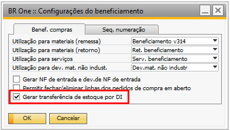

Entrada de Produto Acabado
Nesta tela é possível realizar a entrada de produtos acabados.
Para acessar essa tela pode utilizar as opções:
Através do menu Produção -> Entrada de produto acabado;
Através do Terminal de Apontamentos;
Através do botão direito na Ordem de Produção liberada.

Para realizar a entrada de produto acabado, basta informar os campos “Nº da ordem de produção”, o “Depósito” e a “Quantidade”.
O CFL (Choose From List) do campo “Nº ordem produção” será carregado da seguinte forma:
Quando o campo estiver vazio, apenas aparecerão as 100 primeiras OPs para seleção.
Quando o campo estiver com (*), aparecerão todas as OPs disponíveis para entrada de PA.
Quando houver algum filtro, aparecerão todas as OPs de acordo com o filtro informado.
OBS.: Ordens de produção que possuem a flag “Ignorar no fechamento de custos” marcada não serão carregadas no CFL. (Fechamento de custo contábil (xxx)).
Caso o usuário tente adicionar uma entrada sem informar o número da OP, a seguinte mensagem será exibida ao usuário:

BR One :: Informe uma ordem de produção.
Para o campo “Depósito”, caso a base seja multifilias, só poderão ser selecionados depósitos que pertençam à mesma filial do depósito informado na ordem de produção.
Caso o parâmetro “Bloquear alteração do campo depósito” esteja desmarcado, e o usuário tente adicionar uma entrada sem informar o depósito, a seguinte mensagem será exibida ao usuário:

BR One :: Informe um depósito.
Caso o usuário tente adicionar uma entrada sem informar uma quantidade, a seguinte mensagem será exibida ao usuário:

BR One :: Informe uma quantidade maior que zero.
Caso o usuário tente adicionar uma entrada de uma ordem de produção que não possua componentes, a seguinte mensagem será exibida:

BR One :: Não é possível realizar uma Entrada de PA para uma OP sem componentes.
Caso o usuário tente adicionar uma entrada sem data, a seguinte mensagem será exibida:

BR One :: Informe uma data do documento.
Caso o usuário tente adicionar uma entrada e as contas contábeis “Conta de material em processo” e/ou “Conta GGF arbitrado” estiverem com a flag “Bloquear lançamento manual” marcada, a seguinte mensagem será exibida:

BR One :: Para realização deste processo, o parâmetro “Bloquear lançamento manual” deve estar desmarcado na conta “x”
Essa situação pode ser revertida, marcando a flag “Permitir a entrada de PA sem componentes ativos (custo zero)” (xxx).
Ao realizar uma entrada de produto acabado, é feita uma entrada de mercadoria com o item produzido pela ordem de produção, porém, o caminho realizado pelo addon, varia conforme o tipo de ordem de produção.
-Entrada de PA para uma OP Padrão

Na ordem de produção padrão, ao adicionar entrada de PA, é realizada:
Saída de insumos para os componentes que estejam configurados como baixa por explosão;

Entrada de mercadoria para o PA;

LCM do GGF arbitrado (se configurado);

Ficha de analise do PA (se configurado).
-Entrada de PA para uma OP de Retrabalho

Na ordem de produção de retrabalho, deve-se levar em consideração o tipo de administração do PA, se o mesmo for administrado por nenhum, ao adicionar a entrada de PA, é realizada:
Saída de insumos para os componentes que estejam configurados como baixa por explosão;
Reavaliação de estoque para o PA;

LCM do GGF arbitrado (se configurado);
Transferência de estoque: Transfere o item do depósito de retrabalho para o depósito desejado da filial no qual o usuário está logado.

Ficha de analise do PA (se configurado).
Quando o PA é administrado por lote/série, e não é realizado a troca de número de lote/série, o processo de entrada é igual ao demonstrado para PA administrado por nenhum, mas se realizar o troca do número do lote ou série, ao adicionar a entrada de PA, é realizada:
Saída de insumos para os componentes que estejam configurados como baixa por explosão;
Saída de mercadorias (PA): Baixa do mesmo do depósito de retrabalho

Entrada de mercadoria (PA): Faz a entrada do “novo” lote do PA no depósito de retrabalho

LCM do GGF arbitrado (se configurado);
Transferência de estoque: Transfere o item do depósito de retrabalho para o depósito desejado da filial no qual o usuário está logado, deve ser escolhido o número de lote/série informado na entrada de mercadoria.

BR One :: O(s) lote(s) selecionado(s) precisa(m) ser o(s) mesmo(s) criado(s) na entrada de mercadoria [“x” (x)].
Ficha de analise do PA (se configurado).
Entrada de PA para uma OP de Beneficiamento de Compra

Na ordem de produção de beneficiamento de compra, ao adicionar entrada de PA, é realizada:
Saída de insumos para os componentes que estejam configurados como baixa por explosão;
Entrada de mercadoria para o PA: No depósito de terceiro;
Transferência de estoque: Transfere o PA do depósito de terceiro para o depósito padrão do item ou qualquer outro depósito da filial no qual o usuário esteja logado;
Ficha de analise do PA (se configurado).
A transferência de estoque pode ser realizada por DI, dependendo da configuração de beneficiamento, caso contrário a mesma é adicionada manualmente após a adição da entrada de mercadoria.
Para o documento de transferência do estoque é necessário salientar que a mesma é gerada conforme a configuração da tela de configurações de documento, se estiver configurado para gerar pedido de transferência de estoque, este será gerado após a adição da entrada de mercadoria, obrigando neste caso que o usuário realize a adição manual da transferência de estoque.